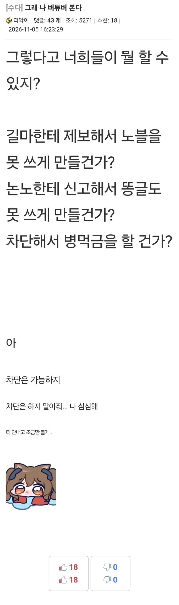

메숭이들은 버튜버 가지고 혐오하더니만 그 누구보다도 버튜버에 진심이긴하노 [외부 동영상 원본 열기]https://youtu.be/CeYiuYTpY0M?si=ds4Vzizqj5H7skiQ 사이버 창녀 이론 정리뜨끈뜨끈한 메평 신작입니다.Provided to YouTube by 이단아Producer: 이단아https://youtube.com/@이단아Composer: Suno AIhttps://suno.comMastering: duhttps://youtube.com/@duRE0109#신창섭...youtu.be노래도 같이 샤라웃할꺼 잊고있었네? 추가함. 출처: 메이플스토리 리부트 갤러리 [원본 보기]